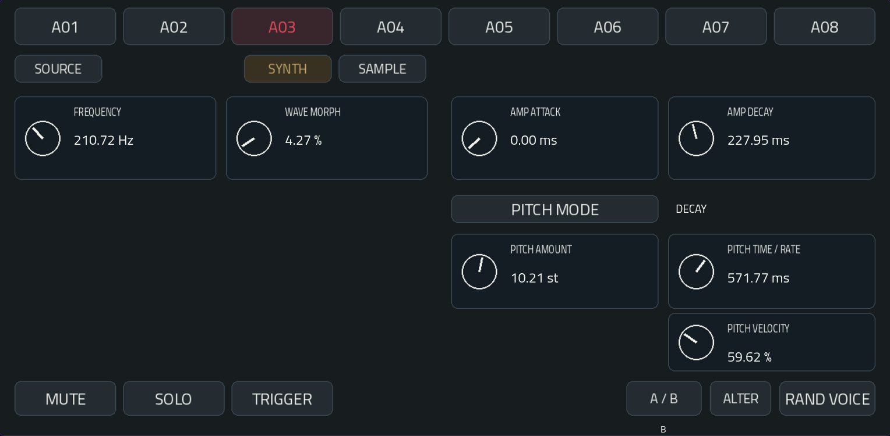
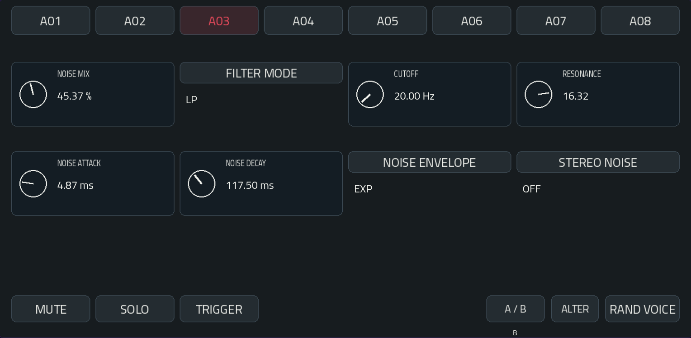
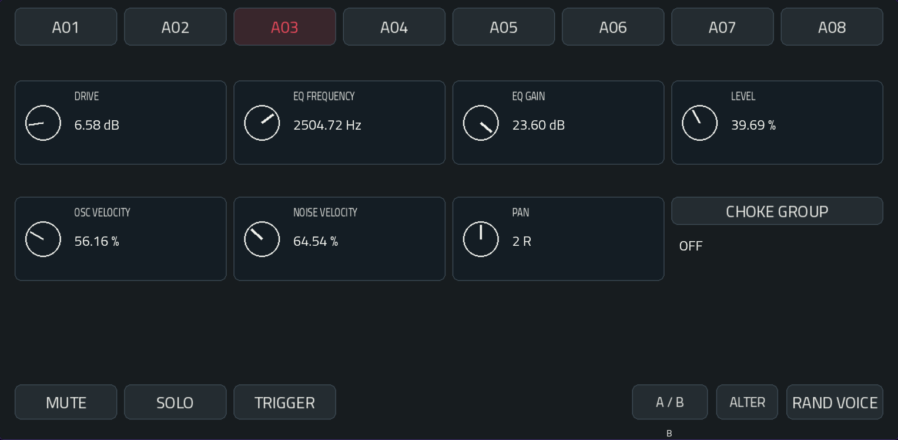
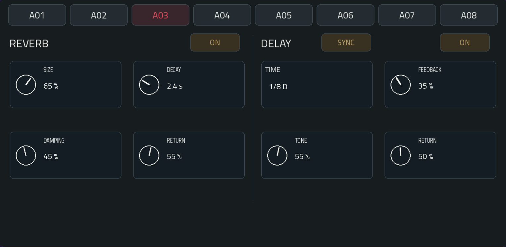
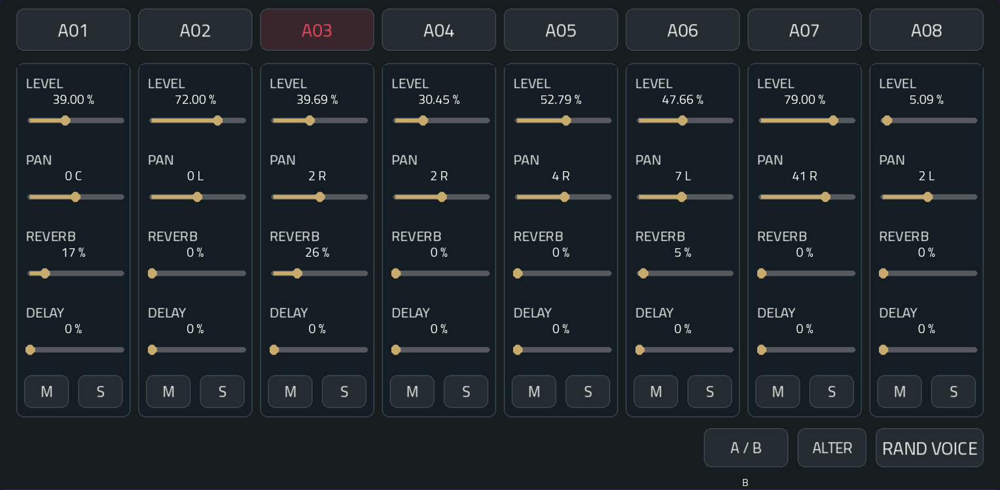
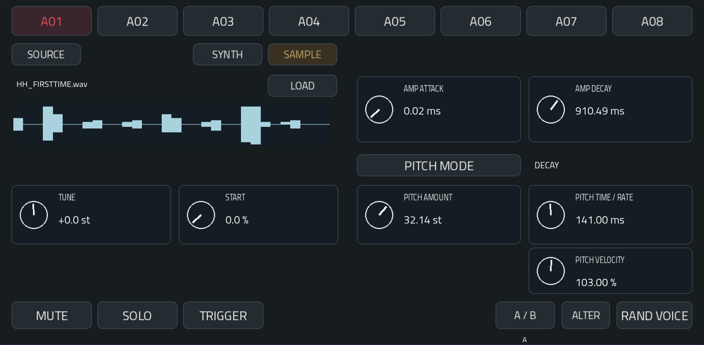

Une boîte à rythmes inspirée de Microtonic.
πToniC propose 8 voix de percussion indépendantes, chacune associant du bruit filtré à un oscillateur à forme variable ou à la lecture d’un sample WAV.
Son moteur sonore réunit modulation de hauteur, enveloppes d’amplitude, drive, EQ et réglages individuels par voix.
Une reverb stéréo et un delay synchronisé au tempo complètent le moteur.
Explorez 150 presets de kits Patternarium BEST convertis, puis faites-les vôtres.
Les notes MIDI 36–43 déclenchent A01–A08. Les notes 0–7 sont également acceptées comme alias sur le chemin DRUM compatible. Jouer une note ne change pas la voix sélectionnée pour l’édition.
Le séquenceur est celui de la Force. Pour la correspondance A01–A08 / notes 36–43 : SHIFT + STEP SEQUENCER → Scale : Chromatic → Snap to Scale : activé. Vérifier le registre de départ.
TRIGGER permet d’écouter la voix sélectionnée. Les enveloppes déterminent la durée des sons ; relâcher la note ne coupe pas le hit.
Touche A01–A08 pour choisir une voix. La voix sélectionnée est rouge. Le contour blanc fin suit le contrôle qui a le focus pour la molette.
Une impulsion azur marque un déclenchement accepté. Une voix exclue par MUTE ou SOLO ne produit pas cette impulsion.
A02 joue : son bouton s’illumine en azur, tandis qu’A03 reste sélectionnée pour l’édition.

La vitesse effective du mode SINE est limitée à 2 000 Hz.


DRIVE sature la voix. EQ FREQUENCY / GAIN modifient sa couleur.
LEVEL, OSC VELOCITY, NOISE VELOCITY et PAN règlent le niveau, les sensibilités à la vélocité et le panoramique.
Les voix d’un même CHOKE GROUP se coupent mutuellement. OFF les laisse indépendantes.

Deux effets communs aux huit voix : REVERB à gauche, DELAY à droite. Chaque effet reçoit les départs de MIXER. Les deux chemins fonctionnent en parallèle ; le delay n’est pas envoyé dans la reverb, ni l’inverse.
Les boutons ON / OFF activent ou désactivent progressivement l’entrée et le retour de l’effet. Le signal direct reste présent. Désactiver masque le retour ; la queue interne se vide et peut redevenir audible si l’effet est réactivé rapidement.
Le delay conserve une entrée stéréo et croise les retours de feedback entre gauche et droite. Les changements de temps sont progressifs et peuvent produire un glissement de hauteur. Le tempo valide de MPC est utilisé entre 20 et 400 BPM ; avant sa réception, le moteur utilise 120 BPM. Le buffer couvre les divisions proposées sur cette plage.

Chaque tranche possède LEVEL, PAN, REVERB, DELAY, M et S.
Pour essayer : choisir une voix, monter son send REVERB ou DELAY, puis vérifier que l’effet correspondant est ON et son RETURN supérieur à zéro.
Les presets antérieurs gardent leurs sons : leurs nouveaux sends sont à zéro. Les effets sans entrée ni queue ne calculent pas leur réseau audio.
| Onglet | Huit encodeurs |
|---|---|
| TONE | Frequency · Wave Morph · Amp Attack · Amp Decay · Pitch Amount · Pitch Time / Rate · Pitch Velocity · libre |
| NOISE | Noise Mix · Cutoff · Resonance · Noise Attack · Noise Decay · libre · libre · libre |
| CHARACTER | Drive · EQ Frequency · EQ Gain · Level · Osc Velocity · Noise Velocity · Pan · libre |
| EFFECTS | Reverb Size · Decay · Damping · Return · Delay Time · Feedback · Tone · Return |
| MIXER | Level A01 à Level A08 |
TONE, NOISE et CHARACTER suivent la voix sélectionnée. EFFECTS pilote les effets partagés ; son Q-Link TIME suit SYNC / FREE. MIXER conserve les huit niveaux indépendamment de la sélection. Les sends se règlent au tactile et à la molette.
A / B compare les deux états propres à la voix. ALTER apporte une variation légère ; RAND VOICE crée un nouveau timbre.
Ces commandes préservent LEVEL, PAN, MUTE, SOLO, CHOKE, les sends et les réglages des effets partagés. Les sends sont des réglages de mixage communs aux deux états A/B.
La liste PRESET native propose les 150 kits embarqués Patternarium BEST. Un choix charge les huit voix et leurs états A/B. Le premier programme est chargé à l’insertion du plugin.
Sauvegarder un preset avec le menu natif de la Force inclut les huit voix, les sends, les effets et les états A/B. Le projet conserve le programme sélectionné et les modifications apportées. Les queues audio ne sont pas sauvegardées ; elles sont vidées lors d’un rappel d’état.
Les anciens presets et projets πToniC PT1 restent lisibles ; ils rétablissent les nouveaux sends à zéro et les effets à leurs valeurs initiales. Un ancien build ne peut pas charger les états enrichis avec les effets.
Le Step Sequencer natif, la banque PRESET, le focus, l’activité azur et les Q-Links des quatre pages initiales sont validés par Greg sur Force. La version 1.0.0, y compris EFFECTS et les sends, a été essayée par Greg sur Force : lecture, cinq onglets/Q-Links, effets et réouverture du projet avec ses réglages confirmés. Installation, désinstallation et réinstallation standard vérifiées.

Dans TONE, choisissez SYNTH ou SAMPLE pour la voix sélectionnée.
LOAD ouvre le navigateur de WAV. USER / SD, DRIVES, UP, PREVIOUS et NEXT permettent de parcourir les dossiers ; touchez un fichier pour le charger. CANCEL ferme le panneau. Jusqu'à 256 entrées par dossier sont affichées ; rangez les grandes collections en sous-dossiers.
WAV mono ou stéréo : PCM 16/24/32 bits ou float32, 8 à 192 kHz, dix secondes maximum. Le chargement et la préparation de la forme d'onde se font en arrière-plan. Un fichier absent, illisible, trop long ou non pris en charge est signalé ; la source sample reste silencieuse.
A/B conserve deux jeux TUNE/START ; source et fichier restent communs à la voix. ALTER et RAND VOICE conservent le fichier et la source, mais peuvent modifier les réglages, y compris TUNE/START.
Les projets et presets enregistrent le chemin d'origine, pas le fichier audio. Conservez les samples au même endroit et sur un support disponible à la réouverture. La collecte automatique à côté du preset n'est pas incluse dans cette version. Gardez une copie des projets d'origine avant essai : un ancien binaire ne lit pas la nouvelle extension d'état sample.
Candidat validé par l’auteur en session musicale sur Force Gen1. Le paquet public est reconstruit à partir de ce candidat ; cela ne constitue pas un nouveau cycle formel d’installation/désinstallation du paquet exact.
L’aperçu montre les crêtes positives et négatives, avec une normalisation visuelle sans modifier le son. Les lignes durée/stéréo/Ready sont retirées ; les erreurs de chargement apparaissent sur la ligne du fichier.